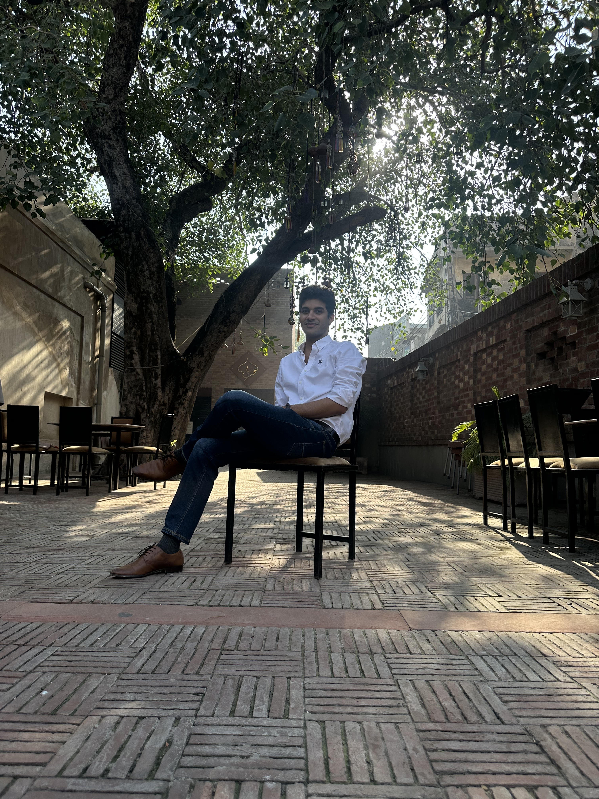

Consultant — ECL Valuation, Assurance
October 2026–PresentEY MENA
Forecasting · Credit risk · Valuation
- Working on forecasting and expected credit loss (ECL) models for assurance and valuation engagements, reporting to the Partner.
Finance, mathematics and machine learning — put to work.
I move between financial risk, economic research and building models. My work spans electricity markets, agriculture, credit, international trade and language models: finding the question, working through the mathematics, and building something that can be tested and used.
Consultant · EY MENA · ECL Valuation & Assurance

EY MENA
Forecasting · Credit risk · Valuation
National Credit Guarantee Company Limited (NCGCL)
Financial institutions · Energy · Trade
The Pakistan Credit Rating Agency (PACRA)
Energy · Construction · Credit analysis
Project Indigenous Mechanization · Government of Punjab
Agriculture · Field research · Technology adoption
Institute of Business Administration, Karachi
Higher education · Strategy · Performance analytics
Ireland-based clients · QuantOra, Dublin
Agriculture · Forecasting · Classification
Across subjects.
Grounded in problems.
What does it cost to fix electricity prices for a year? I developed research and a simulation model using ISMO demand and marginal-cost profiles to compare fixed-price choices, buyer contributions and the guarantor’s exposure when reserves are depleted.
Built and deployed an interactive application that replaces repeated manual analysis with a view of Pakistan’s product mix, exporter concentration and market opportunities.
Fine-tuned the 1.1-billion-parameter TinyLlama model using LoRA and Direct Preference Optimization, evaluating instruction-following and question-answering behaviour on custom datasets.
Implemented Black–Scholes and Heston models in Python, and benchmarked Monte Carlo option-pricing simulations on NSE market data against Black–Scholes outputs.
Designed early-warning models to flag high-risk microfinance clients, identified predictive features and supported the workflow design for model deployment.
Reviewed optimisation techniques and their mathematical derivations, then built and ran multiple models for high-dimensional logistic regression.
Lahore University of Management Sciences · 2025
Institute of Business Administration, Karachi · 2021
Open to questions, research, collaborations and useful things we could build together.
j.nasir25260@gmail.com